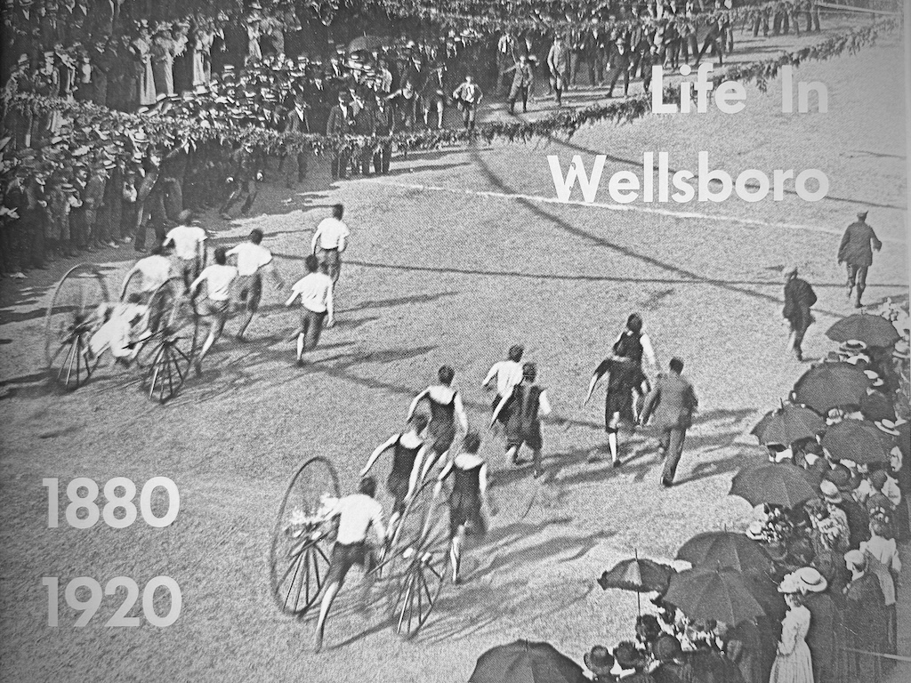

Life in Wellsboro, 1880–1920
Read the original sleeve notes
This book is a delightful community album depicting life in Wellsboro between 1880 and 1920. It is loaded with tidbits of interest — a fascinating blend of old photographs, newspaper accounts, excerpts from interviews with older residents, census data, and a wide array of other historical sources. It is an appreciative glimpse of Wellsboro, heartwarming in its approach.
The book’s organization is pleasantly simple to follow. First, you are presented with photographs and descriptions of the place — the streets, houses, business establishments, office buildings, the public square, churches, and so forth; then, you have an opportunity to study portraits of some of the community’s most interesting and colorful people — you’ll enjoy the faces of the people who lived in Wellsboro; next you are delighted by a series of photographs that depict everyday life — both work and play; and finally, you are given a succinct summary of the main events of the time.
You will enjoy the book many times over. It will be a ready source of conversation not only among your immediate family and friends, but also among future generations.